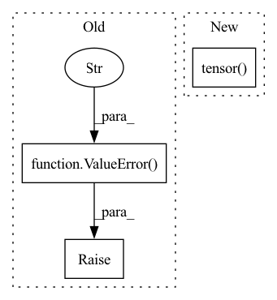

Pattern ID :29633
Before Change
if result.GetSpacing() != reference.GetSpacing():
raise ValueError("The reference and result images should have same resolutions")
if result.GetSize() != reference.GetSize():
raise ValueError("The reference and result images should have same shape" )
hd1 = __surface_distances(result_array, reference_array, voxelspacing, connectivity)
hd2 = __surface_distances(reference_array, result_array, voxelspacing, connectivity)
return numpy.percentile(numpy.hstack((hd1, hd2)), 95)After Change
hd1 = __surface_distances(result_array, reference_array, params["subject_spacing"])
hd2 = __surface_distances(reference_array, result_array, params["subject_spacing"])
hd_95 = numpy.percentile(numpy.hstack((hd1, hd2)), 95)
return torch.tensor( hd_95)
def fetch_metric(metric_name):
In pattern: SUPERPATTERN
Frequency: 3
Non-data size: 3
Instances Fragment ID: 87886581
Project Name: cbica/gandlf
Commit Name: d781f5415a19cdd0124c64364e64cf0a85461a63
Time: 2021-06-25
Author: sarthak.pati@hotmail.com
File Name: GANDLF/metrics.py
M Class Name: AnonimousClass
N Class Name: AnonimousClass
M Method Name: hd95(3)
N Method Name: hd95(3)
M Parent Class:
N Parent Class:
M File Name: GANDLF/metrics.py
N File Name: GANDLF/metrics.py
M Start Line: 225
M End Line: 235
N Start Line: 225
N End Line: 232
Before Change
elif reduction == "sum":
func = torch.sum
else:
raise ValueError("reduction should in ("mean", "sum")" )
if with_logits:
y_pred = torch.sigmoid(y_pred)
y_pred = torch.clamp(y_pred, 1e-6, 1 - 1e-6)
After Change
// target == -1. It"s neither a positive sample nor a negative sample.
return torch.sum(
torch.where(target == -1, torch.tensor( 0., device=target.device) ,
alpha * (1 - pred) ** gamma * target * torch.clamp_max(-torch.log(pred), 100) +
(1 - alpha) * pred ** gamma * (1 - target) * torch.clamp_max(-torch.log(1 - pred), 100)))
Fragment ID: 87886580
Project Name: jintao-huang/efficientdet_pytorch
Commit Name: b140444fc9d402a1206ec4a8d6e0514b82003371
Time: 2021-03-31
Author: hjt_study@qq.com
File Name: models/loss.py
M Class Name: AnonimousClass
N Class Name: AnonimousClass
M Method Name: weighted_binary_focal_loss(4)
N Method Name: weighted_binary_focal_loss(6)
M Parent Class:
N Parent Class:
M File Name: models/loss.py
N File Name: models/loss.py
M Start Line: 9
M End Line: 32
N Start Line: 21
N End Line: 24
Before Change
)
elif self.beta and (self.R or self.C):
raise ValueError(
"Only either beta or RC must be specified as an input argument, not both."
)
elif bool(self.R) ^ bool(self.C):
raise ValueError("R and C must both be specified.")
After Change
self.beta = torch.exp(torch.ones(1) * (-self.time_step / (self.R * self.C)))
elif self.beta and self.R and not self.C:
self.C = self.time_step / (self.R * torch.log(torch.tensor( 1 / self.beta) ))
elif self.beta and self.C and not self.R:
self.R = self.time_step / (self.C * torch.log(torch.tensor(1 / self.beta))) Fragment ID: 87886582
Project Name: jeshraghian/snntorch
Commit Name: f28fe5efbd9ed24a137ddc05cf16e9e91377c381
Time: 2021-03-13
Author: 40262130+jeshraghian@users.noreply.github.com
File Name: snntorch/__init__.py
M Class Name: Lapicque
N Class Name: Lapicque
M Method Name: __init__(12)
N Method Name: __init__(12)
M Parent Class: LIF
N Parent Class: LIF
M File Name: snntorch/__init__.py
N File Name: snntorch/__init__.py
M Start Line: 415
M End Line: 432
N Start Line: 420
N End Line: 445